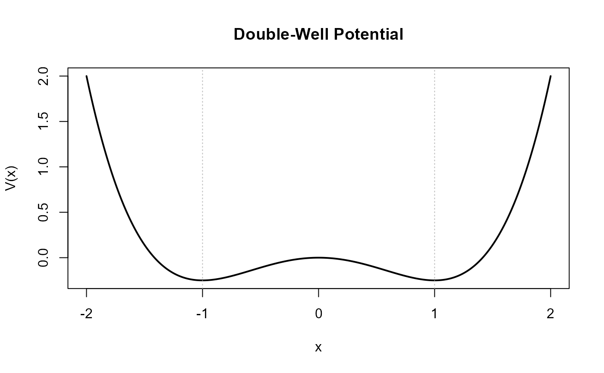
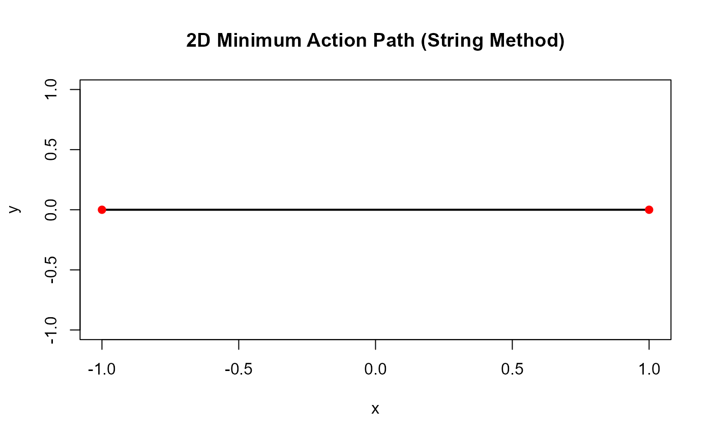

rareflow: Normalizing Flows for Rare-Event Inference
Pietro
Source:vignettes/rareflow.Rmd
rareflow.RmdIntroduction
Rare events are outcomes that occur with extremely small probability but often carry significant scientific or practical importance. Examples include:
transitions between metastable states in stochastic differential equations (SDEs),
deviations of empirical distributions from their expected values,
failure events in complex systems,
tail events in biological, physical, or financial models.
Estimating rare-event probabilities is challenging because:
naïve Monte Carlo requires an enormous number of samples,
the relevant trajectories are atypical,
the underlying dynamics may be high-dimensional or nonlinear.
rareflow provides a unified framework that combines:
Sanov theory for empirical distributions,
Girsanov change of measure for SDEs,
Freidlin–Wentzell large deviations for small-noise diffusions,
with normalizing flows for flexible variational inference.
The package offers modular flow models, variational optimization, and specialized wrappers for rare-event tilting.
1.A first example: variational inference for a discrete rare event
We consider an observed empirical distribution:
We construct a planar flow and fit a variational posterior:
flow <- makeflow("planar", list(u = 0.1, w = 0.2, b = 0))
fit <- fitflowvariational(Qobs, pxgivenz = px, nmc = 500)
fit$elbo
#> [1] -0.9438972This computes the Evidence Lower Bound (ELBO):
2. Girsanov tilting for SDEs
Consider the SDE:
We simulate Brownian increments:
Define a drift tilt:
theta <- rep(0.5, T)
girsanov_logratio(theta, Winc, dt)
#> [1] -1.832407We can fit a tilted variational model using the wrapper:
3. Freidlin–Wentzell quasi-potential
For small-noise diffusions of the form:
rare transitions are governed by the Freidlin–Wentzell action:
Double-well potential
The classical double-well potential is
with drift
We visualize the potential landscape:
V <- function(x) x^4/4 - x^2/2
xs <- seq(-2, 2, length.out = 400)
plot(xs, V(xs), type = "l", lwd = 2,
main = "Double-Well Potential",
ylab = "V(x)", xlab = "x")
abline(v = c(-1, 1), lty = 3, col = "gray")
The quasi-potential between two points and is defined as the minimum action over all admissible paths connecting them:
We compute the quasi-potential between two points:
b<- function(x) {
v<- as.numeric(x)
return(c(v - v^3)) #double-well drift
}
qp<- FW_quasipotential(-1, 1, drift = b, T = 200, dt = 0.01)
qp$action
#> [1] 132900.4Plot the minimum-action path:
plot(qp$path, type = "l", main = "Minimum-Action Path (Freidlin–Wentzell)")3.1 Two-dimensional example: radial double-well
We consider the 2D potential
whose minima form a ring of radius 1.
The drift is
We visualize the potential landscape:
V2 <- function(x, y) 0.25 * (x^2 + y^2 - 1)^2
xs <- seq(-2, 2, length.out = 200)
ys <- seq(-2, 2, length.out = 200)
grid <- expand.grid(x = xs, y = ys)
Z <- matrix(V2(grid$x, grid$y), nrow = length(xs))
contour(xs, ys, Z,
nlevels = 20,
main = "2D Radial Double-Well Potential",
xlab = "x", ylab = "y")We simulate a 2D diffusion:
dt <- 0.01
T <- 5000
x <- matrix(0, nrow = T, ncol = 2)
b2 <- function(v) {
r2 <- sum(v^2)
-(r2 - 1) * v
}
for (t in 1:(T-1)) {
drift <- b2(x[t, ])
noise <- sqrt(dt) * rnorm(2)
x[t+1, ] <- x[t, ] + drift * dt + noise
}
plot(x[,1], x[,2], type = "l",
main = "2D Diffusion in a Radial Double-Well",
xlab = "x", ylab = "y")3.2 Minimum Action Path in 2D (String Method)
We compute a 2D Freidlin–Wentzell minimum-action path using a simple string-method iteration.
We consider the radial double-well potential:
We compute a MAP between the points and .
# Potential and drift
V2 <- function(x, y) 0.25 * (x^2 + y^2 - 1)^2
b2 <- function(v) {
r2 <- sum(v^2)
-(r2 - 1) * v
}
# String method parameters
N <- 80 # number of points in the string
steps <- 200 # number of iterations
dt_sm <- 0.01 # step size
# Initial straight-line path
path <- cbind(seq(-1, 1, length.out = N), rep(0, N))
# String method iterations
for (k in 1:steps) {
# Update each interior point
for (i in 2:(N-1)) {
drift <- b2(path[i, ])
path[i, ] <- path[i, ] + dt_sm * drift
}
# Reparametrize to keep points evenly spaced
d <- sqrt(rowSums(diff(path)^2))
s <- c(0, cumsum(d))
s <- s / max(s)
path <- cbind(
approx(s, path[,1], xout = seq(0,1,length.out=N))$y,
approx(s, path[,2], xout = seq(0,1,length.out=N))$y
)
}
plot(path[,1], path[,2], type="l", lwd=2,
main="2D Minimum Action Path (String Method)",
xlab="x", ylab="y")
points(c(-1,1), c(0,0), pch=19, col="red")
3.3 Animation of a 2D diffusion trajectory
We animate the 2D trajectory simulated in the radial double-well potential.
# Simulate a 2D trajectory
dt <- 0.01
T <- 2000
x <- matrix(0, nrow = T, ncol = 2)
for (t in 1:(T-1)) {
drift <- b2(x[t, ])
noise <- sqrt(dt) * rnorm(2)
x[t+1, ] <- x[t, ] + drift * dt + noise
}
df <- data.frame(
t = 1:T,
x = x[,1],
y = x[,2]
)
p <- ggplot(df, aes(x, y)) +
geom_path(alpha = 0.4) +
geom_point(aes(frame = t), color = "red", size = 2) +
coord_equal() +
labs(title = "2D Diffusion Trajectory", x = "x", y = "y")
animate(p, nframes = 200, fps = 20)4. Full workflow: bistable diffusion and rare-event estimation
We simulate a bistable diffusion:
b <- function(x) x - x^3
dt <- 0.01
T <- 2000
x <- numeric(T)
for (t in 1:(T-1)) {
x[t+1] <- x[t] + b(x[t])*dt + sqrt(dt)*rnorm(1)
}Define a rare event: reaching the right well.
rare_event <- mean(x > 1.5)
rare_event
#> [1] 0.0505Construct an empirical distribution:
Fit a variational flow:
fit <- fitflowvariational(Qobs, pxgivenz = px)
fit$elbo
#> [1] -1.127451